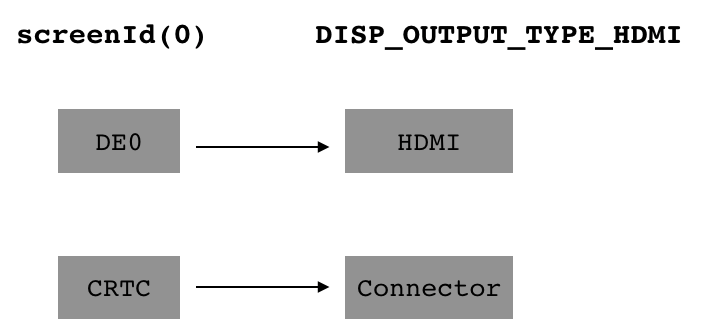
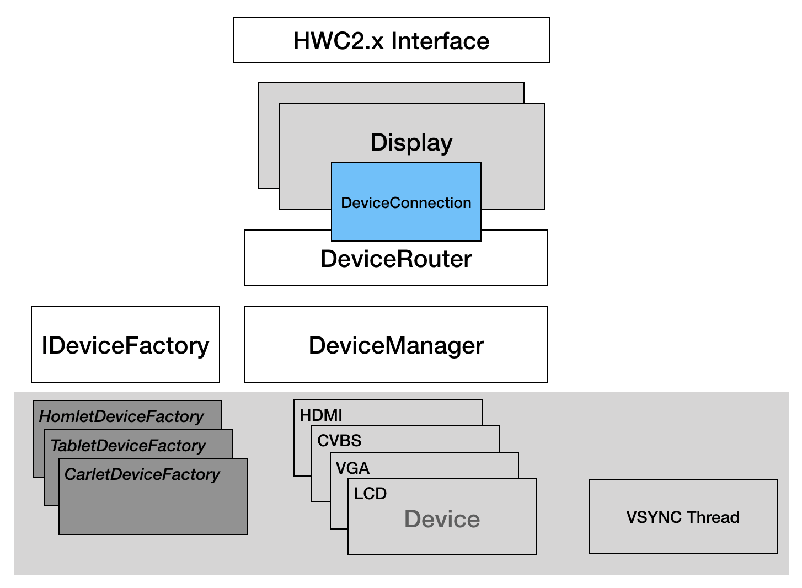

DRM 是 linux 下的图形渲染架构 (Direct Render Manager), 一种新的显示驱动架构。替换之前的 Framebuffer Device 显示架构。
DRM/KMS 抽象出以下组件：
用户空间对显示输出的操作，都转化为对上述组件的操作。
HWC 对显示设备主要包含三类操作：
因此，HWC 对接 DRM，主要是将上述的三类操作转换为对 DRM 组件的操作。
显示通路设定，目的是将 DE 与输出接口绑定，比如盒子平台通常是将 DE0 与 HDMI 绑定，平板则是将 DE0 与 LCD 接口绑定。
在目前基于 disp2 显示框架的实现上，通过 screenId 指定 DE，Output type 指定输出接口；
在 DRM 框架上，显示通路设定则转化为 CRTC 与 Connector 的绑定。

在 disp2 显示框架上，通过 disp_layer_config 表示硬件图层的抽象；图层送显，就是根据当前的图层信息设置 display_layer_config，并将其通过 IOCTL 传递给驱动。
而 DRM 驱动框架上，将硬件图层抽象为 drm_plane 对象，那么送显操作，即转化为对 drm_plane property 的修改。 drm_plane 支持自定义 property，对应到 sunxi 平台上的图层通道的私有参数可以通过自定义 property 传递给 DRM driver。
disp2 显示框架，提供单独的 IOCTL 设置显示设备输出模式；在 DRM 框架上，则是对 drm_connector 的操作。
